Note
Click here to download the full example code
Depth sweep
Compare performance as mesh resolution increases. Generates ch3-4 data.
import xcell
import Common
import matplotlib.pyplot as plt
import argparse
import numpy as np
cli = argparse.ArgumentParser()
cli.add_argument('--comparison', choices=['bounds', 'mesh',
'formula', 'bigPOC', 'fixedDisc'], default='fixedDisc')
cli.add_argument('-p', '--plot-only',
help='skip simulation and use existing data', action='store_true')
# cli.add_argument('-a','--animate',help='skip simulation and use existing data', action = 'store_true')
# cli.add_argument('-p','--plot-only',help='skip simulation and use existing data', action = 'store_true')
args = cli.parse_args()
generate = True
# plot performance info
staticPlots = True
depths = np.arange(3, 12)
xtraParams = None
xmax = 1e-4
if args.comparison == 'mesh' or args.comparison == 'bigPOC':
foldername = 'Quals/PoC'
tstVals = ["adaptive", "uniform"]
# tstVals=['adaptive','equal elements',r'equal $l_0$']
tstCat = 'Mesh type'
if args.comparison == 'formula' or args.comparison == 'fixedDisc':
foldername = 'Quals/formulations'
tstVals = ['Admittance', 'FEM', 'Face']
tstCat = 'Element type'
if args.comparison == 'bounds':
foldername = 'Quals/boundaries'
tstVals = ['Analytic', 'Ground', 'Rubik0']
tstCat = 'Boundary'
if args.comparison == 'testing':
foldername = 'Quals/miniset'
tstVals = ['adaptive', 'uniform']
tstCat = 'Mesh type'
generate = False
staticPlots = False
depths = np.arange(3, 8)
if args.comparison == 'bigPOC':
foldername = 'Quals/bigPOC'
xmax = 1e-2
if args.comparison == 'fixedDisc':
foldername = 'Quals/fixedDisc'
xtraParams = {'BoundaryFunction': 'Analytic'}
# if args.comparison=='voltage':
# tstVals=[False, True]
# tstCat='Vsrc?'
# generate animation(s)
plotters = [
xcell.visualizers.ErrorGraph,
# xcell.visualizers.ErrorGraph,
# xcell.visualizers.SliceSet,
# xcell.visualizers.LogError,
# xcell.visualizers.CurrentPlot,
]
plotPrefs = [
None,
# {'onlyDoF':True},
# None,
# None,
]
study, _ = Common.makeSynthStudy(foldername, xmax=xmax)
NEURON mechanisms not found in estimsurvey/.
if generate and not args.plot_only:
Common.pairedDepthSweep(study,
depthRange=depths,
testCat=tstCat,
testVals=tstVals,
overrides=xtraParams)
120 elem
1.3226 Gb used
error: 1.39509
120 elem
1.32341 Gb used
error: 1.38292
120 elem
1.32442 Gb used
error: 1.46565
512 elem
1.32461 Gb used
error: 0.711183
512 elem
1.32461 Gb used
error: 0.626179
512 elem
1.32461 Gb used
error: 0.766867
736 elem
1.32461 Gb used
error: 0.358631
736 elem
1.32479 Gb used
error: 0.350071
736 elem
1.32479 Gb used
error: 0.469607
1632 elem
1.32479 Gb used
error: 0.203653
1632 elem
1.32479 Gb used
error: 0.504739
1632 elem
1.32479 Gb used
error: 0.346672
2976 elem
1.32479 Gb used
error: 0.298805
2976 elem
1.32524 Gb used
error: 0.596175
2976 elem
1.32524 Gb used
error: 0.440742
5272 elem
1.32524 Gb used
error: 0.248566
5272 elem
1.32875 Gb used
error: 0.429459
5272 elem
1.32875 Gb used
error: 0.234026
7232 elem
1.32929 Gb used
error: 0.239598
7232 elem
1.3329 Gb used
error: 0.415435
7232 elem
1.3329 Gb used
error: 0.215875
14232 elem
1.3329 Gb used
error: 0.233044
14232 elem
1.33356 Gb used
error: 0.368771
14232 elem
1.33338 Gb used
error: 0.218464
24536 elem
1.33365 Gb used
error: 0.226043
24536 elem
1.33784 Gb used
error: 0.334305
24536 elem
1.33732 Gb used
error: 0.21718
costcat = 'Error'
# costcat='FVU'
# xcat='l0min'
xvalues = ['Number of elements', 'l0min', 'Total time [Wall]']
xtags = ['numel', 'l0', 'totTime']
if staticPlots:
for xcat, xtag in zip(xvalues, xtags):
xcell.visualizers.groupedScatter(study.studyPath+'/log.csv',
xcat=xcat,
ycat=costcat,
groupcat=tstCat)
fname = tstCat+"_"+costcat+'-vs-'+xtag
fname.replace(' ', '_')
nufig = plt.gcf()
study.savePlot(nufig, fname)
for fv in tstVals:
fstack, fratio = xcell.visualizers.plotStudyPerformance(study,
onlyCat=tstCat,
onlyVal=fv)
fstem = '_'+tstCat+str(fv)
study.savePlot(fstack, 'Performance'+fstem)
study.savePlot(fratio, 'Ratio'+fstem)
- 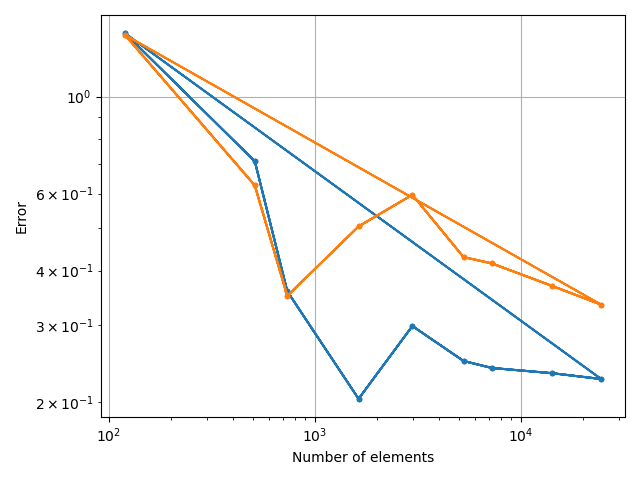


- 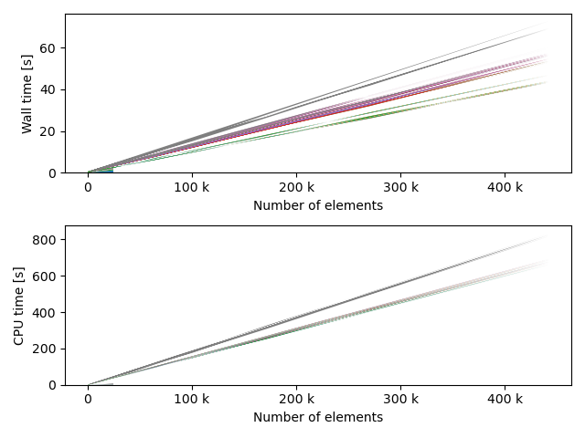

- 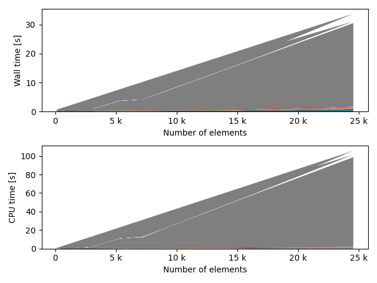

- 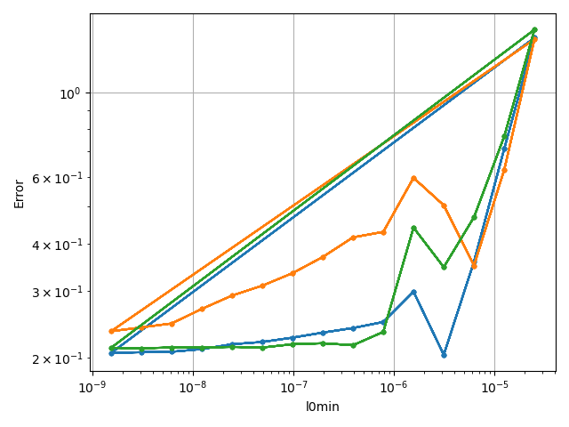

- 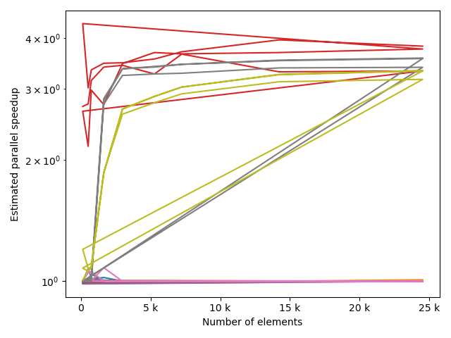


- 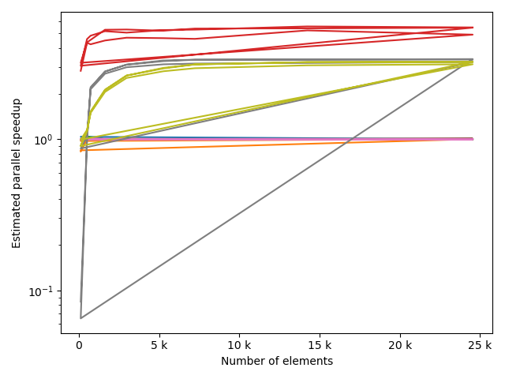
- 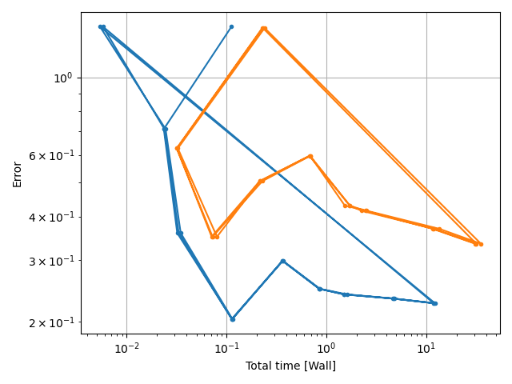
- 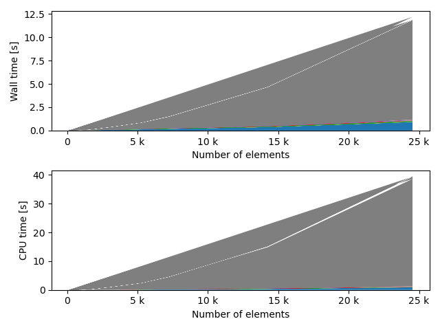


- 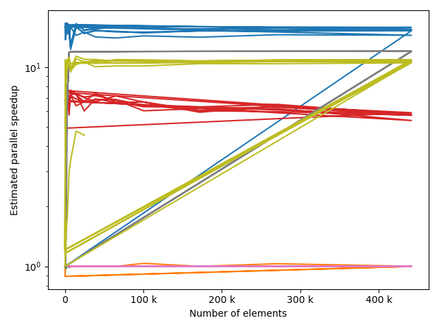
/home/benoit/repos/xcell/xcell/visualizers.py:638: RuntimeWarning: More than 20 figures have been opened. Figures created through the pyplot interface (`matplotlib.pyplot.figure`) are retained until explicitly closed and may consume too much memory. (To control this warning, see the rcParam `figure.max_open_warning`).
fig = plt.figure()
for ii, p in enumerate(plotters):
plots = []
names = []
ranges = None
for fv in tstVals:
fname = p.__name__+'_'+str(fv)
fname.replace(' ', '_')
plotr = p(plt.figure(), study, prefs=plotPrefs[ii])
if 'universalPts' in plotr.prefs:
plotr.prefs['universalPts'] = True
if 'onlyDoF' in plotr.prefs:
if plotr.prefs['onlyDoF']:
fname += '-detail'
plotr.getStudyData(filterCategories=[tstCat],
filterVals=[fv])
plots.append(plotr)
names.append(fname)
if ranges is not None:
plotr.unifyScales(ranges)
ranges = plotr.dataScales
for plot, name in zip(plots, names):
plot.dataScales = ranges
plot.animateStudy(fname=name, fps=1.0)
- 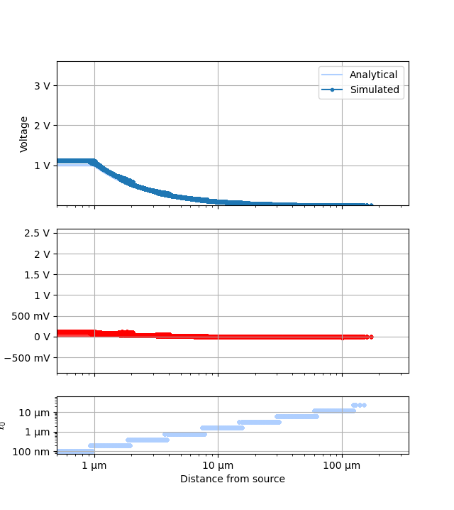
- 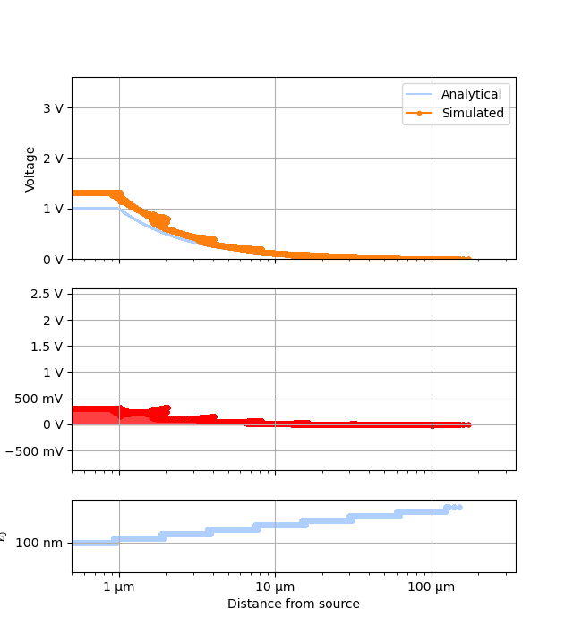
- 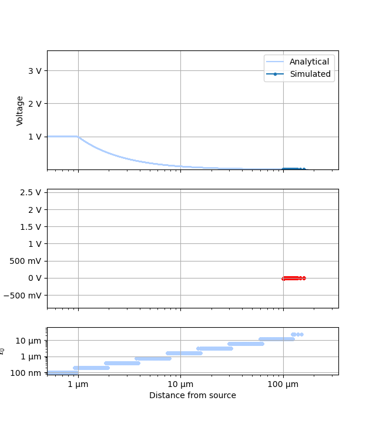
Total running time of the script: ( 35 minutes 59.522 seconds)